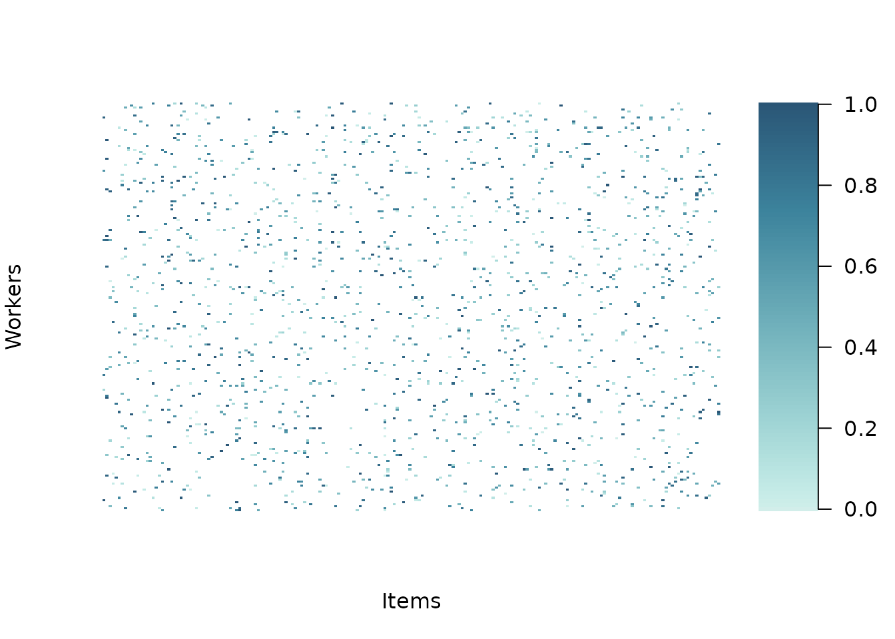
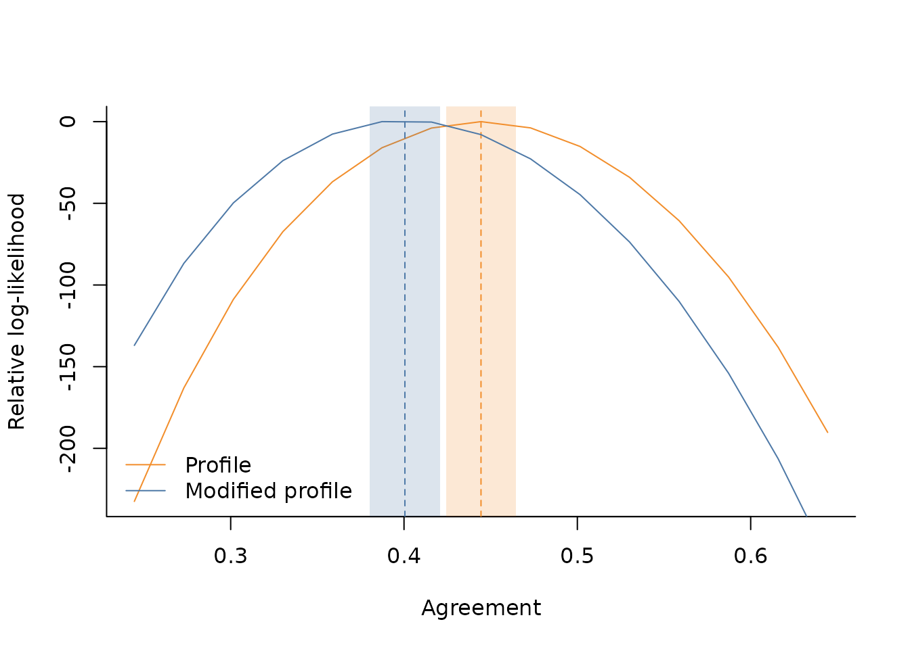

Basic usage
The AgreementPhi package exports a utility function to
simulate data by providing the true agreement and item effects. Consider
for example to simulate continuous ratings for 200 items, collecting 8
relevance assessments per item, for a total of 1600 responses. We set
the true agreement at
library(AgreementPhi)
set.seed(321)
# setting dimension
items <- 200
budget_per_item <- 8
n_obs <- items * budget_per_item
# item-specific intercepts to generate the data
alphas <- runif(items, -1, 1)
# true agreement (between 0 and 1)
agr <- .4
# generate continuous rating in (0,1)
dt <- sim_data(
J = items,
B = budget_per_item,
AGREEMENT = agr,
DATA_TYPE = "continuous",
ALPHA = alphas
)The simulated 1600 ratings are stored in dt$ratings,
while dt$id_item and dt$id_worker store the
item and worker indices related to each rating
names(dt)
#> [1] "id_item" "id_worker" "rating"
head(dt$id_item)
#> [1] 20 44 45 51 83 92
head(dt$id_worker)
#> [1] 1 1 1 1 1 1
head(dt$rating)
#> [1] 0.6375834 0.7420828 0.9866412 0.4995354 0.2111970 0.0271688
length(dt$rating)
#> [1] 1600For convenience, we also provide a plot utility to visualise the data
plot_data(
RATINGS = dt$rating,
ITEM_INDS = dt$id_item,
WORKER_INDS = dt$id_worker
)
The core function of the AgreementPhi package is
agreement(), which implements the numerical algorithms to
estimate the
agreement via profile and modified profile likelihood methods. It
requires as input the ratings, the item ids and worker ids (specified as
integers). For the estimation via profile likelihood, you can specify
METHOD="profile"
# estimation via profile likelihood
fit_profile <- agreement(
RATINGS = dt$rating,
ITEM_INDS = dt$id_item,
WORKER_INDS = dt$id_worker,
NUISANCE = c("items"),
METHOD = "profile",
VERBOSE = TRUE)
#>
#> DATA
#> - Detected 200 items and 200 workers.
#> - Detected continuous data on the (0,1) range.
#> - Average number of observed ratings per item is 8.
#> - Average number of observed ratings per worker is 8.
#>
#> MODEL PARAMETERS
#> - Constant effects: workers
#> - Nuisance effects: items
#> Done!When the VERBOSE option is chosen, the function prints
on screen some useful information about data dimensions and sparsity. In
addition, it also provides an overview of how items and worker effects
are treated. In this case, for example, worker effects are considered as
constant (set at zero by default), while items effects are profiled out
as nuisance parameters. The agreement and precision estimates are
available at
fit_profile$profile
#> $precision
#> [1] 2.446563
#>
#> $agreement
#> [1] 0.4444125while the maximum likelihood estimates of the nuisance parameters are available at
head(fit_profile$alpha)
#> [1] 1.0698711 1.4333241 -0.2898244 -0.9135686 0.3879414 0.1008767To use the modified likelihood approach, it is enough to change the
METHOD argument to modified.
# estimation via modified profile likelihood
fit_modified <- agreement(
RATINGS = dt$rating,
ITEM_INDS = dt$id_item,
WORKER_INDS = dt$id_worker,
NUISANCE = c("items"),
METHOD = "modified",
VERBOSE = TRUE)
#>
#> DATA
#> - Detected 200 items and 200 workers.
#> - Detected continuous data on the (0,1) range.
#> - Average number of observed ratings per item is 8.
#> - Average number of observed ratings per worker is 8.
#>
#> MODEL PARAMETERS
#> - Constant effects: workers
#> - Nuisance effects: items
#> Non-adjusted agreement: 0.444413
#> Adjusted agreement: 0.400508
#> Done!As it can be read from the verbose output, when
METHOD = "modified", the proposed algorithm first optimises
the profile likelihood to evaluate the maximum likelihood estimators
needed to construct the modified profile likelihood. Thus, both
estimates can be retrieved from the fitted object
fit_modified$profile
#> $precision
#> [1] 2.446563
#>
#> $agreement
#> [1] 0.4444125
fit_modified$modified
#> $precision
#> [1] 2.129956
#>
#> $agreement
#> [1] 0.4005075Once the point estimates are computed, we can draw inference on
agreement by using the get_ci() function to construct
confidence intervals. The function will automatically recognise if the
estimates are related to the profile or modified likelihood approach by
looking at the fitted object
# get standard error and confidence interval
ci_profile <- get_ci(fit_profile)
ci_profile
#> $agreement_est
#> [1] 0.4444125
#>
#> $agreement_se
#> [1] 0.0102727
#>
#> $agreement_ci
#> [1] 0.4242784 0.4645467
ci_modified <- get_ci(fit_modified)
ci_modified
#> $agreement_est
#> [1] 0.4005075
#>
#> $agreement_se
#> [1] 0.01034242
#>
#> $agreement_ci
#> [1] 0.3802368 0.4207783For convenience, we provide a utility function to visualise the relative log-likelihood profiles of the two methods as well as the inference results
# compute log-likelihood over a grid
range_ll <- get_range_ll(fit_modified)
# utility plot function for relative log-likelihood
plot_rll(
D=range_ll,
M_EST = fit_modified$modified$agreement,
P_EST = fit_profile$profile$agreement,
M_SE = ci_modified$agreement_se,
P_SE = ci_profile$agreement_se,
CONFIDENCE=.95
)